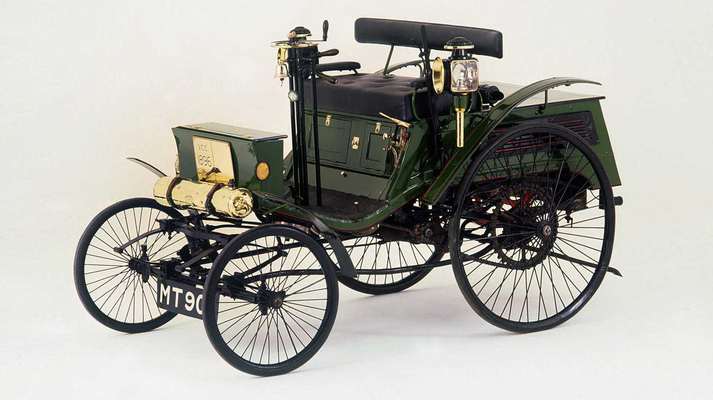

b) 12,7 km/h
C’est un anglais dénommé Walter Arnold qui a réalisé cette infraction sans précédent en 1896 dans la voiture que vous pouvez voir ci-contre. Il a été arrêté par un policier à vélo alors qu’il roulait à presque 4 fois la vitesse autorisée en ville, celle-ci étant fixée à 3,2 km/h. Pour ce dépassement, il a dû s’acquitter d’une amende d’un shilling ce qui correspond aujourd’hui à environ 7€20.
